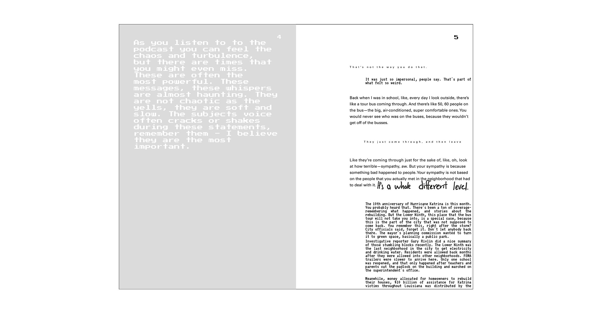
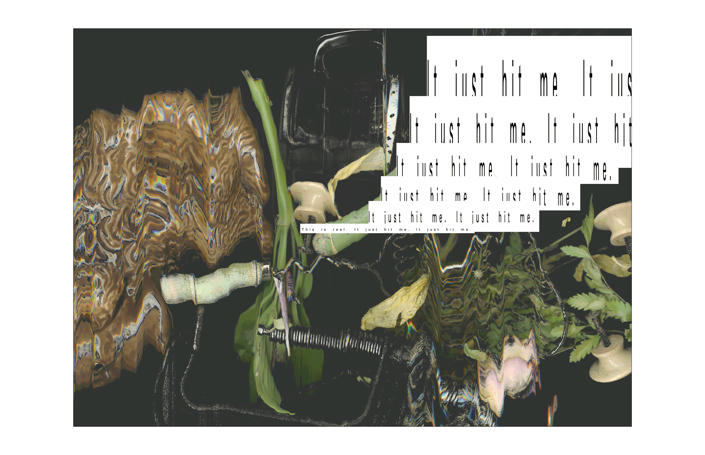
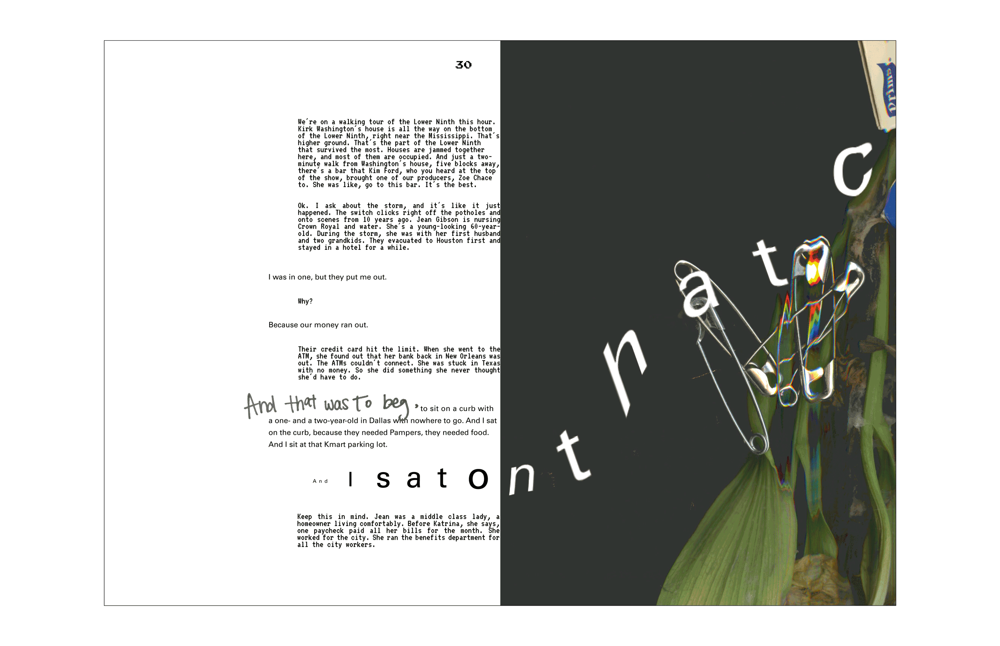
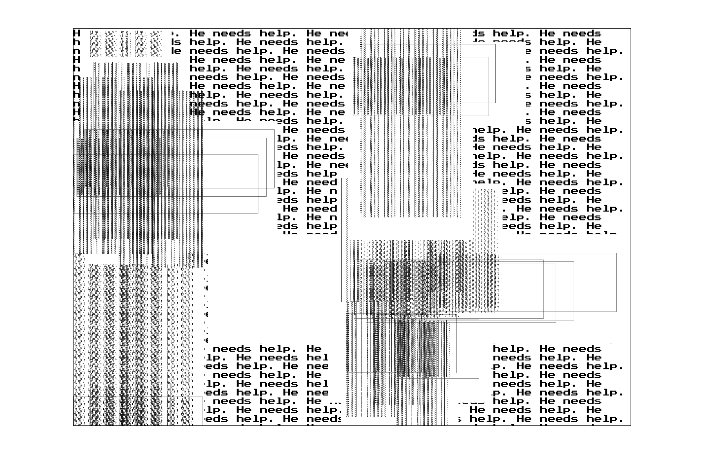
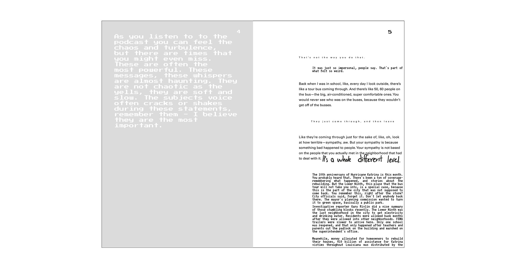
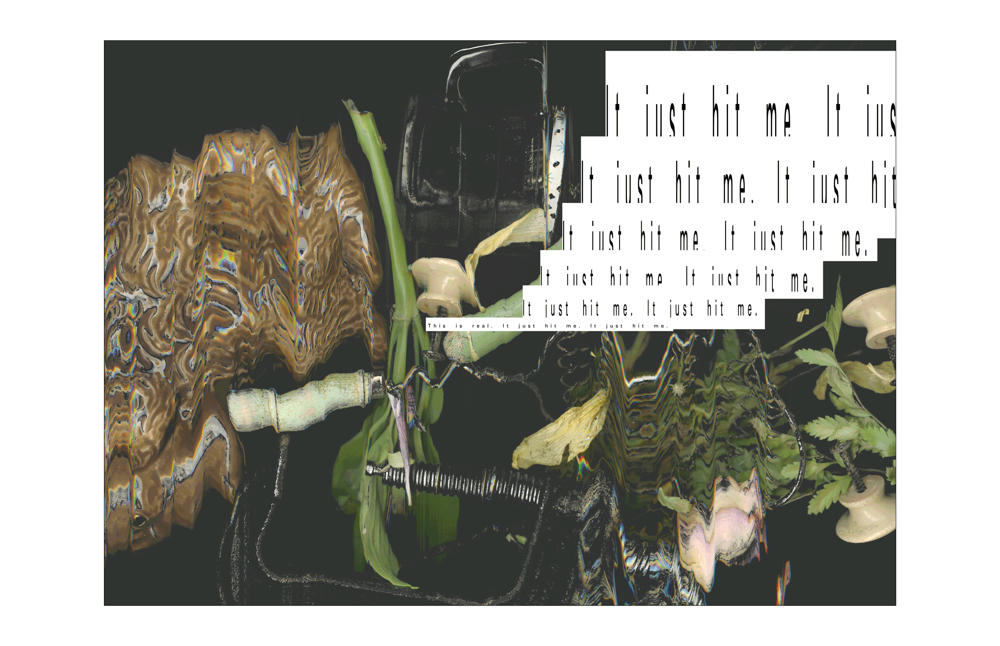
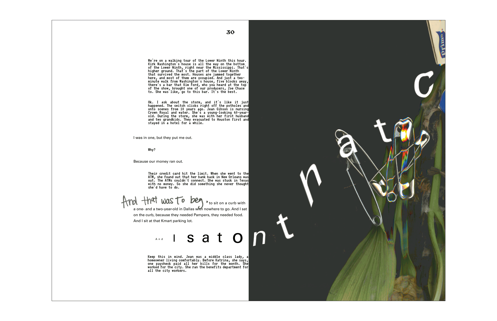
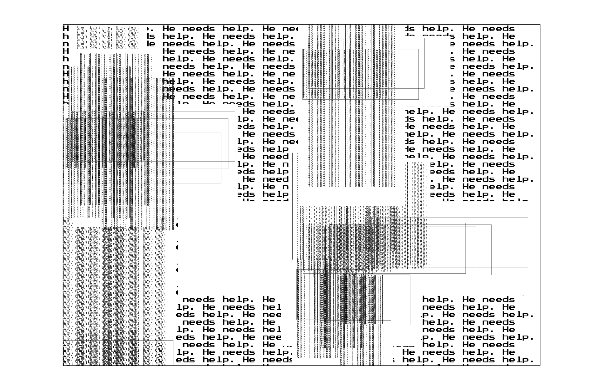

Expressive Typography
Print
Book Design, Experimental
Fall 2016
CONTEXT
The first of the five booklets is the introduction, it presents to the reader how type will be manipulated. Throughout the booklets there will be the interviewer - which is displayed in a aligned monospace type - this is because I did not want the user to focus on the interviewer, but instead solely on the subject. There is also my personal voice which is the larger monospace type - I use this when I want the viewer to pause.
The subject has three voices - regular, yelling and the whispers. The yells are horrifying parts of the interviews and I tried to illustrate the shakiness that you can hear when listening to the podcast.If you’re not concentrating hard enough, you might even miss the whispers. These, however, are often the most powerful - these messages are almost haunting. They are not chaotic like the yells, they are soft - the subject breaks down and their voice often cracks or shakes.
LISTEN TO THE PODCAST HERE - thisamericanlife.org
STRATEGY
Because we were given content formatted into a transcript, I really wanted to stick with the idea that the text came from conversations and not try to force it into a medium it was not. I wanted to also separate the content into booklets because I wanted to have clear breaks between subjects. I wanted each subject to have their own space, where I could uniquely visualize their stories through type, but keep it consistent with the rest of the system.
I wanted to experiment with expressive typography and use it as a tool to illustrate typographically how each of the indivduals felt. Type is often repeated, this is to express how the individuals are constantly transported back to the night the hurricane hit, and no matter what they do, no matter how they try and move forward in their lives, they are reminded by what the hurricane has taken away and what memories it has muddled or destroyed.
A second portion of this project tasked us with utilizing over 30 found objects. I decided to use this as a opportunity to further express my visual intent. I organized the objects in order to relate back to the individual stories of the booklets and scanned them. The images that were created toy with the overarching theme of forgotten memories.
DELIVERABLES
The first booklet is based on the life of Kirk Washington and how constant reminders of his past and of the hurricane plague his daily routine. His story is that of trying to move on.
The repeated shakiness and troubled tone that is present in Kirk’s voice throughout the podcast is also something I wanted to visualize. Jean Gibson has had everything taken away from her - her family, her house, her job - everything. Gibson constantly tries to look forward. I wanted to visualize this by forcing the user into flipping forward several pages in the book just to realize that the same message is being repeated. A unconscious step back in time. Rewinding is the story of Roy Bradley’s loss - of having a reset on life. Bradley now stands overwhelmed in debt, alone.
The last booklet, unlike the previous is seen in a more positive light. The individuals talk about the future, about how the tragic event was strengthening for the family. I thought it would be fitting to end the series on this note as these are the voices of the future, not of the past. These conversations remind us to always look forward.
PROCESS
One of the biggest issues I had was how to have all these different elements without overwhelming the viewer. This was difficult as I had a lot of ideas that I wanted to implement. In the end I decided to try and keep the margins more rigid in order to create more consistent pages. I also largely decreased the sizes of the yells so they would not draw so much attention away from the whispers.
I also decided to use a thinner paper that made a sound when flipped that mimicked the sound of waves and water, I had to compromise for dimmer colors but I like the end result. The printing errors throughout and the rippling of pages reminded me of the sound waves that inspired me from the beginning.


 






